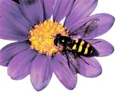
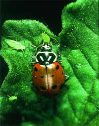
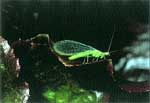
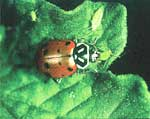
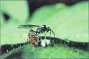
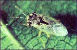
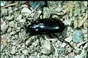
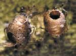
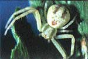

Protect Your Garden With Beneficial Bugs
Plant the right flowers to attract beneficial insects to your garden.
By Barbara Pleasant
August/September 2004
Potatoes were planted for the first time last summer at Clemson University’s Calhoun Field Laboratory Research Farm in South Carolina. Soon after the plants emerged, potato beetles showed up and began eating the plants. Then came a rowdy band of soldier bugs, sometimes called predatory stink bugs. “It was neat and exciting to see them,” says Dr. Geoff Zehnder, a professor of entomology at Clemson. “The stink bugs really did a job on the potato beetles. We still had to spray once with Bt (Bacillus thuringiensis), but the rest of the time, the stink bugs kept the potato beetle population down.”
Zehnder, who also is coordinator of Clemson’s IPM (integrated pest management) and sustainable agriculture programs, says he doesn’t know exactly where the helpful stink bugs came from but he thinks they were in residence as a consequence of plant diversity on the farm, which is home to plenty of flowering plants intended to attract beneficial insects. “It’s not a silver bullet solution to pest problems, but it does have an effect,” Zehnder says. “If you are going to farm or garden organically, you need to build in attractants for beneficials.”
Ten years ago, Dr. Whitney Cranshaw of Colorado State University headed a team that surveyed more than 150 plant species to document those most effective at attracting beneficials. The study was conducted at the Denver Botanic Garden and the Cheyenne Botanic Garden; the target beneficials were five leading “good bug” categories - hover flies, braconid wasps, tachinid flies, lacewings and lady beetles (See “Your Garden’s ‘Most Wanted’ Beneficial Insects,” below). “The beneficials liked plants with tiny flowers, which had easily accessible nectar chambers,” Cranshaw says, noting the favorites were members of the mint, carrot and aster families, and sedums and alyssums. (The flowers they surveyed and the beneficials attracted are listed below.) Including some of these ornamentals in your garden should help attract and sustain good bugs to help keep pests in check. (Crenshaw has just published a superb new book, Garden Insects of North America: The Ultimate Guide to Backyard Bugs.)
Plants Versus Pests
Researchers, farmers and gardeners the world over have experimented with ways to use plants to attract beneficial insects. People have long believed that plants respond to insect attacks defensively, but it’s only recently that this process has been better understood. Let’s take tomatoes, for example. When tomato hornworms begin feeding on tomato leaves, the tomatoes do two things - they change their leaf chemistry so they become a less nutritious food, and they release volatile chemicals that attract natural enemies of hornworms. In tomato and many other plants, these volatile chemicals include jasmonic acid, a natural plant hormone that works like a dinner bell to beneficials such as braconid wasps, which are major parasites of tomato hornworms. At Michigan State University’s Plant Research Laboratory, Dr. Gregg Howe has found that the same “signaling pathway” decreases feeding by spider mites on tomatoes; other researchers have found that jasmonic acid even attracts carnivorous mites, which then feed on the pest spider mites.
In the world of plant-pest communication, jasmonic acid may be a generalized “scream for help,” but plants can emit much more specific signals to attract very specific beneficial insects. For example, when a beet army worm feeds on a plant, molecules in its saliva help the plant fine-tune its scream to call parasitic wasps, specialists in killing beet army worms. Scientists do not know much about these specific communications yet, but that is changing. “This is a very new area, and we expect that more plant-predator systems will be discovered in the future,” says Dr. Gary Felton, head of the entomology department at Pennsylvania State University.
Hungry beneficials are on the lookout for big, fat caterpillars, teeming colonies of aphids or runaway populations of potato beetles; they seek pests the plants have not been able to bring under control. Some feeding on plants by pest insects must occur in order to attract the beneficials’ attention, according to one study of cabbage aphids on broccoli conducted in Corvallis, Ore. In this research, alyssum, buckwheat and other beneficial host flowers were planted to help lure beneficial insects, and though plenty of beneficial hover flies appeared, they did not start laying eggs on broccoli plants until aphid populations grew to 50 aphids per plant. Meanwhile, the hover flies enjoyed taking nectar and pollen from the flowers, which probably increased the number of eggs they were able to lay.
Other research has shown that well-fed beneficial insects often lay twice as many eggs as those that must get by on a meager supply of nectar and pollen. Obviously, the relationships between plants, pests and beneficial insects are intricate, characterized by a level of intelligence that is beyond our present understanding. Yet one thing is clear, researcher Felton says: “Conserving natural enemies is a valuable tool for pest control.”
Farmscaping Basics
Dr. Robert Bugg of the University of California at Davis coined the word “farmscaping” to describe the deliberate use of plants and landscaping techniques to attract and conserve beneficials, which include insects and birds. “It’s what the Europeans call ‘zones of ecological compensation,’” Bugg says.
The idea is to devote 5 percent to 10 percent of your garden or farm space to plants that attract beneficials. Plants that fit the profile include such cultivated species as fennel, coriander and mints, or native plants, which consistently are abuzz with little wasps and flies.
Most beneficial insects can move about when they perceive a plant’s signal that a pest has begun feeding, but they won’t wait around forever if they have nothing to eat. So, it’s important to have host plants that will support the beneficials throughout the season, which means having different plants coming in and out of bloom all summer (see “Flowers to Attract the Good Bugs,” below).
Plants that host beneficial insects in one region may be of little interest to insects in another region, unfortunately. On the West Coast, for example, a native Ceanothus (snowbrush) attracts loads of beneficials in some areas, but not in others. California researcher Bugg says the natives have an edge wherever they may be, and he offered his own back yard as an example. “I have 120 species of California native plants in my back yard, which host an amazing number of insects. It makes all the difference in the world.” Not surprisingly, he adds, most (but not all) of the insects are native species themselves.
Native plants to which insects are partial tend to be big perennials (wild parsnip, elderberry), shrubs (coyote brush in the West, viburnums in the East) or vines such as silverlace or wild clematis. These plants are easy to use in hedgerows or along woodland edges. In addition to outfitting your farm or garden with permanent beneficial borders or hedges that include these long-lived plants, you may want to incorporate strips of flowers that attract beneficials into large swaths of cultivated space, or even planted containers.
Cover crops, including grains and grasses, which host ground beetles; buckwheat, a favorite of many beneficial bugs; and nectar-rich wildflowers and sweet clover can help target particular pest problems - a standard practice in sustainable fruit-growing operations. Bugg has compiled a cover-crop database that includes information on helpful and harmful insects attracted to different cover-crop plants in a wide range of climates (see www.sarep.ucdavis.edu/cgi-bin/ccrop.exe).
Every good farmscape is a custom job, and each is home to its own variety of plants that offer continuity of bloom. If you have a diverse habitat and continuous bloom throughout the year, you have rolled out the welcome mat for beneficial insects. Your plants will ring their dinner bells as pest insects appear, so prepare to be amazed by the appetites of your garden’s smallest friends.
Store-bought Beneficials
You can buy some kinds of beneficial insects to release in your garden, but to be effective, beneficials must be released under precise conditions, and some of those that stick around best (praying mantids, for example) are generalized feeders that kill both helpful and harmful insects. The situation is different in greenhouses, where beneficials are not likely to be present unless you introduce them. In the open garden, growing plants that will attract beneficial insects probably is the most effective, efficient approach. - Mother
Your Garden’s ‘Most Wanted’ Beneficial Insects
The three “P’s” of beneficial insects are pollinators, predators and parasites. Pollinators, such as honeybees, fertilize flowers, which increases the productivity of food crops ranging from apples to zucchini. Predators, such as lady beetles and soldier bugs, consume pest insects as food. Parasites use pests as nurseries for their young. On any given day, all three “P’s” are feeding on pests or on flower pollen and nectar in a diversified garden. If you recognize these good bugs, it’s easier to appreciate their work and understand why it’s best not to use broad-spectrum herbicides. Here are 10 worth knowing:
Lacewings (Neuroptera) may be brown or green, and adults are usually one-half to three-fourths-inch long, with delicate, transparent wings. Eggs are often seen stuck to leaves on short threads. The larvae, known as aphid lions and aphid wolves, feed on aphids, mealybugs, scale, thrips, mites, and other larvae and eggs. The predacious period lasts 15 to 20 days, during which a larva will eat 100 or more insects a day. Adults need pollen, nectar and honeydew (secreted by aphids and other sucking insects), as well as water.
Lady beetles (Coleoptera) are yellow-orange to red, with black spots. Adults are one-fourth-inch long. Both adults and larvae, which look like tiny blue-black and orange alligators, feed on aphids, scale, thrips, whiteflies, spider mites, mealybugs and other soft-bodied pests. Adults are attracted to nectar and pollen plants. Lady beetles overwinter as adults in leaf litter, tree crevices and homes.
Wasps (Hymenoptera) include numerous species of predators and parasites. Large paper wasps are predators, but many parasitic species such as braconids look like tiny flying ants. Some “micro-wasps” that parasitize eggs are so small you may never see them. Braconids lay eggs in the bodies of other insects, including caterpillars, tomato hornworms, aphids, thrips, Mexican bean beetle larvae and various borers. The eggs hatch and the larvae feed on their hosts’ body fluids. Braconids and other parasitic wasps are most active in warm weather, and they like humid conditions. They are attracted by nectar in small flowers.
Predatory bugs (Hemiptera) include soldier bugs, which look like squash bugs but have sharp spines on their shoulders, and big-eyed bugs, which have large bulging eyes on the sides of their heads and no shoulder spines. Both types of predators eat leaf beetle larvae, small caterpillars and many other insects. A third type of predatory bug, the one-fourth-inch-long, black-and-white minute pirate bug, feeds on thrips, mites and insect eggs. Adults of all three species overwinter in perennial weeds or other debris.
Ground beetles (Coleoptera) are large, often black, shiny beetles that frequently are encountered beneath mulch. About 2,500 species are native to North America. Ground beetles are most active at night. They consume soil-dwelling, soft-bodied pests, including slugs, snails and caterpillars. Although they are called ground beetles, some species do climb trees to feed on caterpillars. Ground beetles need a stable habitat because they do not move around very much. They also grow more slowly than many other insects; a complete life cycle, from egg to larvae to pupae to adult, takes one year, and most adults live two to three years.
Hover flies or syrphid flies (Diptera) are brightly colored flies that resemble bees and that hover and dart like hummingbirds. They don’t sting. The larvae - cylinder-shaped maggots with tapered heads -feed on aphids, mealybugs and other small insects. A larva may consume 400 aphids before pupating. Adults feed on pollen and flower nectar. Hover flies overwinter as pupae in the soil.
Parasitic flies include more than 1,300 species of tachinid fly (Diptera), which look like hairy houseflies. They lay their eggs on a number of caterpillars, including corn earworms, cabbageworms, cutworms and many other garden pests. Closely related humpback flies parasitize ants, bees, beetles and scale insects.
Aphid mummies are the bodies of aphids that have been killed by parasites such as mini wasps. The hole was made when an adult mini wasp emerged from the aphid. You can tell if beneficial mini wasps are present by looking closely for the mummies in aphid colonies. To allow the mini wasps to thrive, avoid spraying pesticides and plant flowers listed in the chart below.
Spiders (Arachnida) have eight legs rather than six, and they probably are the most abundant predators in home landscapes. The 3,000 species found in North America include web spiders, jumping spiders, crab spiders and many others. Spiders are general feeders that help keep many other insects in check.
Adapted from “Natural Enemies are Your Allies” by the University of California.Adapted from “Natural Enemies are Your Allies” by the University of California.

|
 REGENTS OF THE UNIVERSITY OF CALIFORNIA An adult syrphid fly feeds on pollen and nectar (syrphid larvae prey on aphids, too.) |
 REGENTS OF THE UNIVERSITY OF CALIFORNIA The familiar lady beetle feeds on aphids. |
 REGENTS OF THE UNIVERSITY OF CALIFORNIA Lacewings feed on aphids, mealybugs, scale, thrips, mites, and other larvae and eggs |
|
 REGENTS OF THE UNIVERSITY OF CALIFORNIA Lady beetles feed on aphids, scale, thrips, whiteflies, spider mites, mealybugs and other soft-bodied pests. |
 REGENTS OF THE UNIVERSITY OF CALIFORNIA Wasps include numerous species of predators and parasites. |
 REGENTS OF THE UNIVERSITY OF CALIFORNIA Preadatory bugs, such as the big-eyed bug shown here, eat leaf beetle larvae, small caterpillars and many other insects. |
|
 REGENTS OF THE UNIVERSITY OF CALIFORNIA Ground beetles eat soil-dwelling, soft-bodied pests, including slugs, snails and caterpillars. |
 REGENTS OF THE UNIVERSITY OF CALIFORNIA Parasitic flies lay their eggs (shown here) on a number of caterpillars, including corn earworms, cabbageworms, cutworms and many other garden pests. |
 REGENTS OF THE UNIVERSITY OF CALIFORNIA Aphid mummies are the bodies of aphids that have been killed by parasites such as mini wasps. |
|
 REGENTS OF THE UNIVERSITY OF CALIFORNIA Spiders are the most abundant predators in home landscapes, and they help keep many other insects in check. |
|
|